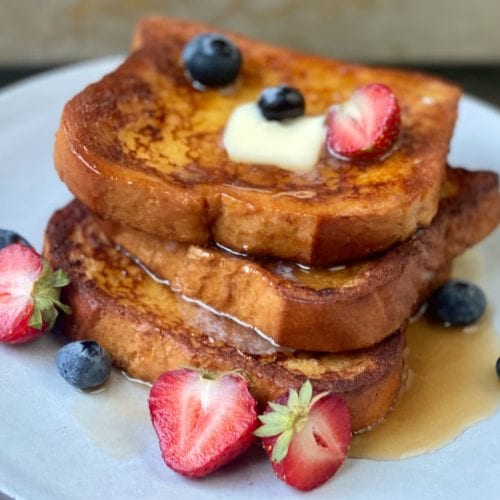

French Toast

French toast, a classic breakfast for being its
elatively quick and simple meal and also being delicious
Ingredients
- 6 thick slices of white bread
- 2 large rggs
- 2/3cup Milk
- 1 teaspoon vanilla extract
- 1/4 teaspoons cinnamon
- pinch of salt
- 1 tablespoons of butter or as needed
Steps
- Whisk milk, eggs, vanilla, cinnamon, and salt together in a shallow bowl.
- Lightly butter a griddle or skillet and heat over medium-high heat.
- Dunk bread in the egg mixture, soaking both sides.
- cook both sides 3-4 each, then serve!!!
Main page